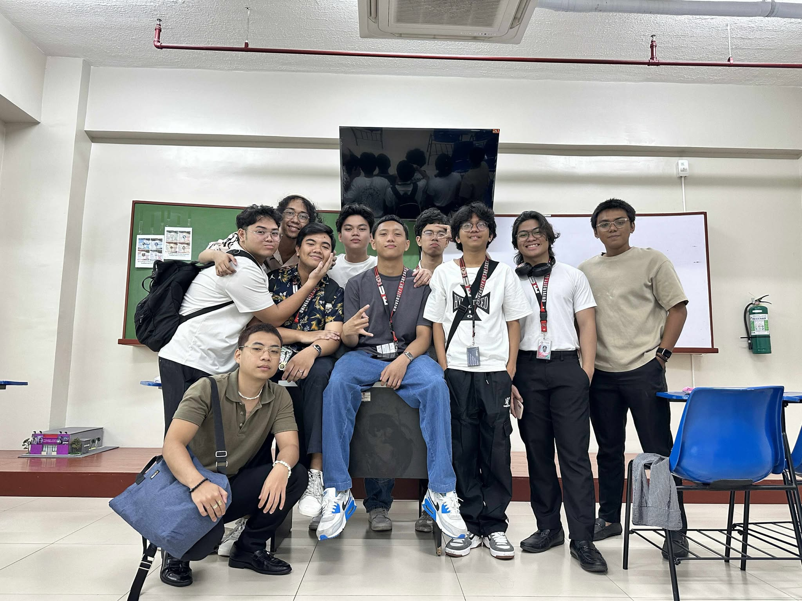

My Blissful Life
The journey that shaped who I am today
Childhood in Quezon City

My name is Miko Antonio S. Racho, and my childhood played a huge role in shaping the person I am today. I grew up in Quezon City, a place full of noise, movement, and energy, and living there taught me how to adapt to a fast paced environment where everything seemed to move quickly. From crowded streets to busy neighborhoods, I learned how to stay focused and grounded even when things felt overwhelming, and despite the busy surroundings, I always found joy in simple things like laughing with friends, spending time with family, and appreciating small everyday moments. One of the biggest parts of my childhood was playing basketball, and it became more than just a game for me because it shaped my character and mindset. Whether I was playing in the city or in Bulacan, every court felt like a place where I could grow, learn patience, practice teamwork, and show respect to both teammates and opponents. The sport also taught me discipline, consistency, and resilience, helping me understand that success does not come overnight but through effort and perseverance. All these experiences built my confidence and became the foundation of who I am today, a person who values growth, teamwork, and determination in every aspect of life.
Teenage Years

My teenage years were a time of growth, discovery, and strong friendships. Friends became very important to me during this stage, and they were not just classmates but people who truly understood me. We spent time together after school, talked about our dreams, shared our problems, and supported one another through challenges and achievements. Those simple hangouts, late conversations, and shared laughter became some of the most meaningful memories of my life. Basketball remained part of my life and helped strengthen our bond, as we pushed each other to improve, celebrated victories together, and learned how to handle defeats as a team. Through competitions and everyday practice, I learned how to communicate better, control my emotions, and step up when leadership was needed. These years taught me confidence, communication, loyalty, and trust, but they also helped me understand responsibility, independence, and the importance of choosing the right people to surround myself with. My teenage years shaped my identity, strengthened my character, and prepared me for the challenges and opportunities of adulthood.
College Life

My college life marks a new and important chapter in my journey. It introduced me to a more challenging academic environment where expectations are higher and responsibilities are greater. Each subject requires deeper understanding, critical thinking, and consistent effort, pushing me to step out of my comfort zone. I learned how to manage my time wisely by balancing classes, projects, deadlines, and personal responsibilities. Working on group tasks taught me how to collaborate with different personalities, listen to new ideas, and contribute my own insights confidently. I also became more independent, making decisions on my own and taking full responsibility for my actions and outcomes. Despite the challenges, pressure, and occasional self doubt, college continues to help me grow mentally, emotionally, and socially. Every obstacle strengthens my resilience, and every achievement builds my confidence. I believe these experiences are not only shaping my skills and knowledge but also preparing me to face the real world with determination, maturity, and a clearer sense of purpose.